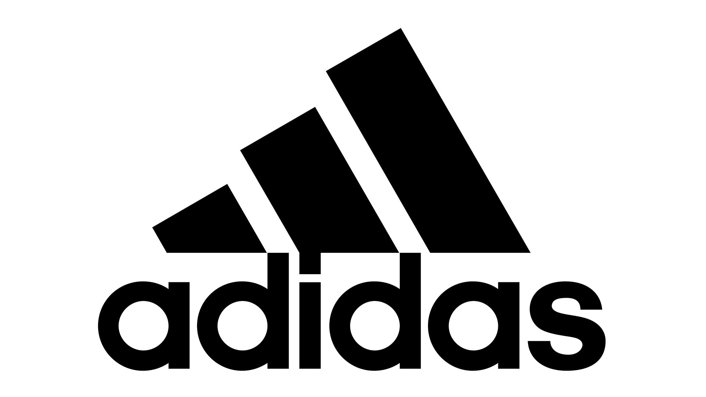
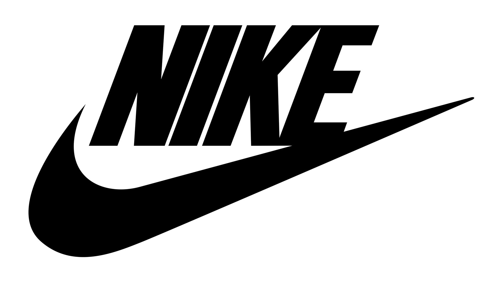
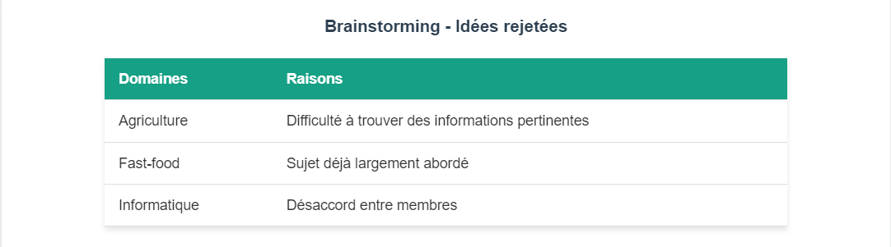
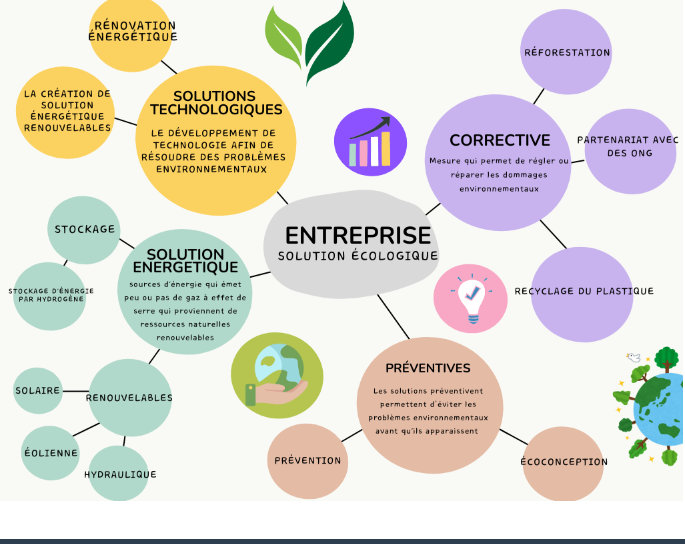

Présentation des Organisations
Adidas
Adidas est une marque allemande spécialisée dans la conception et la fabrication d'articles de sport. Fondée en 1949 par Adolf Dassler, Adidas est aujourd'hui l'un des leaders mondiaux dans l'industrie du sport. L'entreprise est reconnue pour ses équipements sportifs, ses vêtements et ses chaussures. Adidas met un fort accent sur l'innovation, la durabilité, et l'amélioration des performances sportives à travers ses produits.
Nike
Nike est une marque américaine fondée en 1964, spécialisée dans la conception, la fabrication et la vente d'équipements sportifs. Nike est mondialement connue pour ses chaussures de sport, ses vêtements et ses accessoires. L'entreprise est également un pionnier dans l'innovation technologique appliquée aux articles de sport et met un accent particulier sur la durabilité et l'engagement social dans ses pratiques commerciales.
Brainstorming et Répartition des Tâches
Voici le brainstorming effectué pour définir les différentes tâches du projet, ainsi que la répartition entre les membres de l'équipe :
Carte Mentale
Voici une carte mentale pour visualiser les idées clés liées à l'impact environnemental des deux entreprises :
Charte d'utilisation des Outils Informatiques
La charte d'utilisation des outils informatiques est un document important pour garantir l'éthique, la sécurité et le respect des droits d'utilisation des outils et ressources numériques. Elle comprend les points suivants :
- Respect de la confidentialité des données et des informations.
- Utilisation responsable des ressources informatiques et des logiciels.
- Respect des droits de propriété intellectuelle.
- Gestion des accès et sécurité des informations sensibles.
Réflexion sur le Projet
Ce que ce projet m'a apporté :
Ce projet m'a permis de mieux comprendre l'impact des organisations économiques, notamment dans le secteur de l'équipement sportif, et comment elles adoptent des stratégies pour répondre aux défis environnementaux. En me concentrant sur Adidas et Nike, j'ai approfondi mes connaissances sur la manière dont ces entreprises gèrent leur empreinte numérique et leurs initiatives durables. Ce projet m'a également aidé à améliorer mes compétences dans la recherche d'informations fiables, la création de supports visuels (comme la carte mentale), et la rédaction d'analyses comparatives.
Travailler en équipe a été un point clé, car cela m'a permis de mieux organiser le travail, de coordonner nos efforts pour créer un projet cohérent, et de renforcer mes compétences en collaboration. J'ai appris à mieux gérer le temps et à être plus efficace pour accomplir les tâches dans les délais impartis.
Ce que j'ai aimé :
Ce projet m'a beaucoup appris sur les aspects économiques des grandes entreprises comme Adidas et Nike, ainsi que sur leurs stratégies pour réduire l'empreinte numérique. J'ai particulièrement apprécié la création de la carte mentale qui m'a permis de visualiser les différentes idées et de structurer le projet de manière plus claire. Le travail de comparaison m'a également permis de mieux comprendre les initiatives des entreprises dans un contexte environnemental, ce qui m'intéresse beaucoup.
En outre, travailler en équipe a été une expérience enrichissante. Chaque membre de l'équipe a apporté sa propre expertise et ses idées, ce qui a rendu le projet plus dynamique et créatif. Ce type de collaboration est toujours une excellente opportunité pour apprendre de ses collègues et partager des compétences.
Ce que je n'ai pas aimé :
Le principal point négatif a été la gestion du temps, qui a rendu certaines analyses moins approfondies que ce que j'aurais souhaité. Par exemple, bien que nous ayons fait une bonne comparaison entre Adidas et Nike, j'aurais aimé avoir plus de temps pour étudier en profondeur les stratégies de chaque entreprise pour réduire leur empreinte numérique. Il y avait aussi des moments où nous avons dû ajuster nos idées et réorganiser certaines parties du projet, ce qui a causé quelques hésitations au début.
Enfin, la partie sur la charte d'utilisation des outils informatiques, bien qu'importante, m'a semblé un peu théorique. C'est un sujet crucial, mais il a été difficile de l'intégrer de manière pratique dans le contexte du projet. Néanmoins, cela m'a permis de réfléchir à l'importance de la sécurité des données et à la gestion éthique des outils numériques dans un contexte professionnel.